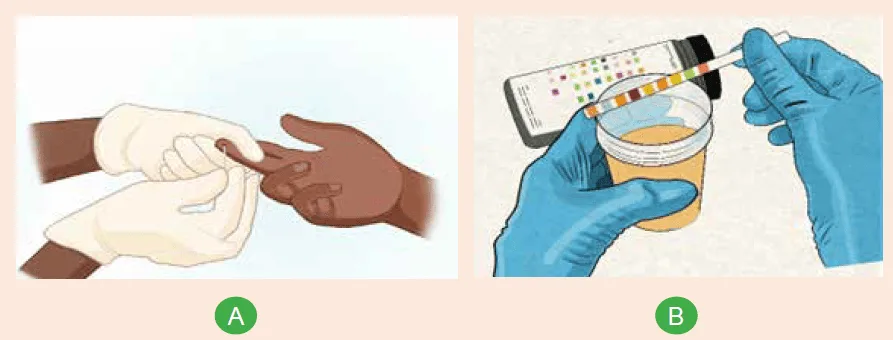
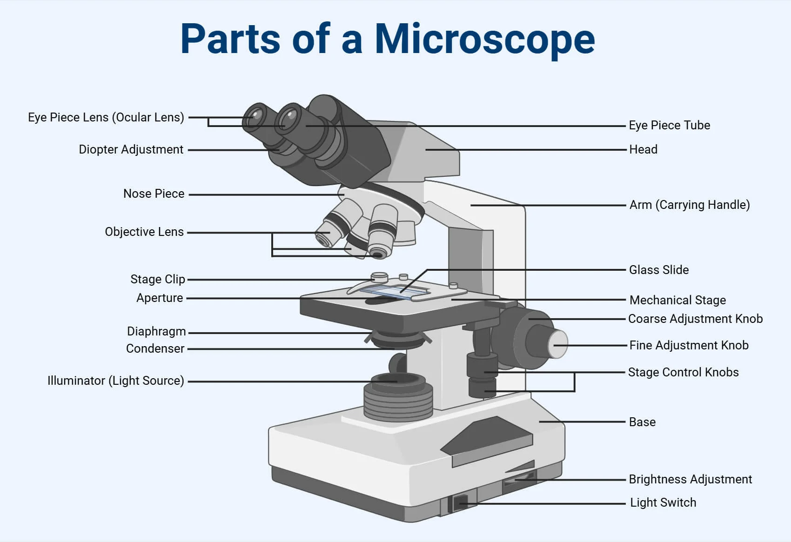
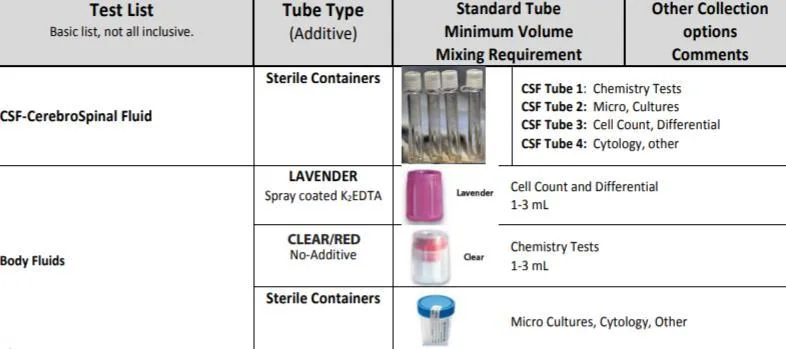

Expanded Nursing Uganda Explanation
Simple laboratory tests should be reviewed through safe maternal and newborn assessment, early recognition of danger signs, respectful communication and timely referral. Connect the definition to vital signs, bleeding, fetal or newborn wellbeing, patient education and local protocol requirements.
Contents, 19 sections (tap to expand)
01 Simple Laboratory Tests in Microbiology
Accurate diagnosis of infectious diseases relies heavily on laboratory analysis. For nurses and midwives, understanding the principles of laboratory tests, especially how to properly collect and handle specimens, is a critical skill. The quality of a lab result is only as good as the quality of the specimen collected. This unit covers the essential equipment, specimen types, and procedures used in a clinical microbiology laboratory.
02 1. The Essential Tool: The Microscope
A microscope is an optical instrument used to observe objects that are too small to be seen with the naked eye. It is the cornerstone of the microbiology lab, used for direct examination of specimens and for viewing stained microorganisms.
03 Types of Microscopes
- Simple Microscope: Contains only one magnifying lens, like a magnifying glass. It has limited magnification.
- Compound Microscope: Contains a system of multiple lenses (ocular and objective lenses), allowing for much higher magnification. This is the most commonly used microscope in medical laboratories in Uganda and worldwide.
04 Components of a Compound Microscope and Their Functions
- Component Function Clinical Importance
- Ocular Lens (Eyepiece) Contains the lens you look through. Typically provides a 10x magnification. It's the final magnification step. Total Magnification = Ocular Lens × Objective Lens.
- Revolving Nosepiece A rotating turret that holds the objective lenses, permitting easy interchange between magnifications. Essential for systematically focusing on a specimen (starting on low power and moving up).
- Stage A flat platform where the specimen slide is placed. It must be kept clean and dry to avoid damaging the specimen or the microscope.
- Stage Clips Clips that hold the specimen slide firmly in place on the stage. Prevents the slide from moving unexpectedly while viewing.
- Condenser A lens system located below the stage that focuses the light from the light source onto the specimen. Properly adjusting the condenser is critical for achieving a clear, well-lit image, especially at high power.
- Diaphragm (Iris Diaphragm) Located within the condenser, it is an adjustable aperture that controls the amount of light passing through the specimen. Used to adjust contrast. Reducing light can make unstained or transparent specimens more visible.
- Light Source (Illuminator) An integrated electric bulb (or a mirror on older models) that provides light. Provides the illumination necessary to see the specimen.
- Coarse Adjustment Knob A large knob that moves the stage up and down rapidly for initial focusing. CRITICAL RULE: Use the coarse adjustment knob ONLY with the lowest power (4x or 10x) objective lens . Using it on high power will crash the lens into the slide, breaking both.
- Fine Adjustment Knob A smaller knob that moves the stage up and down very slowly for precise, sharp focusing. This is the only focusing knob used with the high-power (40x) and oil-immersion (100x) lenses.
- Arm Connects the head of the microscope to the base. It is used to carry the microscope. Proper handling involves holding the arm with one hand and supporting the base with the other.
- Base The supportive bottom of the microscope. Provides stability and houses the illuminator.
05 Specimen Management
The "pre-analytical phase", everything that happens before the sample is tested, is where most laboratory errors occur. As a nurse or midwife, you play the most critical role in this phase. The principle is simple: "Garbage In, Garbage Out." A poorly collected or handled specimen will lead to an incorrect result, potentially harming the patient.
06 Types of Specimens
A specimen is a sample of biological material taken from a patient for diagnostic purposes.
- Blood: Can be whole blood, serum (the fluid after clotting), or plasma (the fluid with anticoagulants). Used for blood cultures, serology, and chemistry.
- Urine: Typically a midstream clean-catch specimen for urinalysis and culture.
- Swabs: Used to sample surfaces. Includes throat, wound, high vaginal, cervical, eye, ear, and nasal swabs.
- Sputum: A sample coughed up from the lower respiratory tract, not saliva. Used to diagnose pneumonia and tuberculosis.
- Stool (Feces): Used to detect intestinal pathogens (bacteria, parasites, viruses).
- Sterile Body Fluids (Aspirates): Fluid collected by needle aspiration from normally sterile sites. Includes Cerebrospinal Fluid (CSF), pleural fluid (from the lungs), synovial fluid (from joints), and peritoneal fluid (from the abdomen).
- Tissue Biopsies: Small pieces of tissue removed surgically for histology and culture.
- Superficial Samples: Skin scrapings, nail clippings, or hair for diagnosing fungal infections.
07 Specimen Containers
Using the correct sterile container is essential to prevent contamination and ensure the specimen is preserved correctly.
- Container Type Description Common Use
- Vacutainer Tubes (Blood) Glass or plastic tubes with a vacuum that automatically draws a specific volume of blood. Tops are color-coded based on the additive inside. Venous blood collection.
- Red or Gold Top Plain tube with no anticoagulant (may have a clot activator). Used for tests requiring serum (e.g., serology, chemistry). The blood is allowed to clot.
- Lavender Top Contains EDTA (an anticoagulant that binds calcium). Used for tests requiring whole blood (e.g., hematology, Complete Blood Count - CBC). Prevents clotting.
- Light Blue Top Contains sodium citrate (a reversible anticoagulant). Used for coagulation studies (e.g., PT/INR).
- Green Top Contains heparin (an anticoagulant). Used for some chemistry tests requiring plasma .
- Gray Top Contains sodium fluoride (preserves glucose) and potassium oxalate (anticoagulant). Used for glucose and lactate testing .
- Sterile Universal Container A sterile, wide-mouthed screw-capped bottle (usually 30 mL). The most versatile container, used for urine, sputum, fluids, and stool .
- Swab with Transport Medium A sterile swab in a tube containing a transport medium like Amies or Cary-Blair. Used for most swabs (throat, wound, vaginal). The medium keeps bacteria alive but prevents overgrowth during transport.
- Blood Culture Bottles Specialized bottles containing a nutrient broth to grow bacteria. They come in aerobic (with oxygen) and anaerobic (without oxygen) sets. For collecting blood when sepsis or bacteremia is suspected.
- Stool Container A clean, wide-mouthed container, often with a built-in spoon in the lid. For collecting feces for examination.
08 Specimen Preservation and Transport
Specimens should be transported to the lab immediately. If a delay is unavoidable, proper preservation is crucial.
- Refrigeration (2-8°C): This is the most common method. It slows down the metabolic activity of bacteria, preventing overgrowth of commensals and preserving the original ratio of microbes. Ideal for urine, swabs, and sputum if there is a delay of more than 2 hours. NEVER refrigerate CSF for bacterial meningitis or blood cultures.
- Freezing (-20°C or lower): Used for long-term storage of serum, plasma, or tissues. Not suitable for most bacteriology specimens as freezing can kill delicate bacteria.
- Incubation (35-37°C): Only for specific situations, like keeping CSF for suspected pyogenic meningitis warm to preserve fragile bacteria like Neisseria meningitidis .
- Chemical Preservation: Transport Media (Amies, Cary-Blair): A semi-solid gel that maintains the viability of bacteria without allowing them to multiply. Essential for swabs.
- Anticoagulants (EDTA, Heparin, Citrate): Prevent blood from clotting when plasma or whole blood is needed.
- Fixatives (10% Formalin): Used for histology to preserve tissue structure by killing all cells and microbes. NEVER use formalin for samples intended for culture.
- Strict Aseptic Technique: Use sterile equipment and techniques to avoid contaminating the specimen with environmental microbes or normal flora from the patient's skin. This is the single most important principle.
- Collect from the Actual Site of Infection: Ensure the sample represents the disease process. For a wound, sample the deep part, not the surface pus. For pneumonia, collect deep-coughed sputum, not saliva.
- Collect at the Right Time: Collect specimens before administering antibiotics whenever possible. For blood cultures, collect during a fever spike. For tuberculosis, collect early morning sputum.
- Use the Correct Container and Label Properly: Every specimen must be in the correct container and labeled immediately with at least the patient's full name, hospital number, date, and time of collection. An unlabeled specimen will be rejected.
- Ensure Sufficient Quantity: An insufficient sample (e.g., a dry swab) cannot be processed properly.
- Prompt Transport to the Lab: Transport all specimens to the laboratory as quickly as possible to ensure the best results.
09 Sputum
- Instruct the patient that the goal is a sample from deep in the lungs, not saliva from the mouth.
- Have the patient rinse their mouth with plain water to reduce contamination from oral bacteria.
- Instruct the patient to take several deep breaths and then perform a deep, forceful cough, expectorating directly into a sterile, wide-mouthed universal container.
- Important Note: Early morning specimens are best as secretions pool overnight. If the patient cannot produce sputum, physiotherapy or induction with nebulized sterile saline may be necessary.
10 Urine (Clean-Catch Midstream)
- Provide the patient with a sterile universal container and antiseptic wipes.
- For Females: Instruct her to separate the labia, clean the urethral opening with a wipe from front to back, and repeat with a new wipe. She should then begin to urinate into the toilet, and without stopping the stream, collect the "midstream" portion of the urine into the sterile container before finishing in the toilet.
- For Males: Instruct him to retract the foreskin (if uncircumcised), clean the glans with a wipe, begin urinating into the toilet, and then collect the midstream portion.
- This procedure is designed to flush out contaminating bacteria from the distal urethra.
11 Wound Swabs & Aspirates
- Superficial Wound/Open Abscess: First, clean the surface of the wound with sterile saline to remove surface contaminants and exudate. Using a sterile swab, firmly sample the advancing edge or deep base of the lesion where active infection is occurring. Place the swab into transport medium.
- Closed Abscess/Deep Wound: This is a doctor-led procedure. The overlying skin is disinfected, and a sterile needle and syringe are used to aspirate pus from deep within the abscess. An aspirate is always superior to a swab because it avoids surface contamination and collects a larger volume of anaerobic bacteria.
12 Venous Blood Collection (Phlebotomy)
- Prepare: Wash hands, wear gloves, assemble all equipment (tourniquet, alcohol swab, needle, vacutainer tubes in the correct order of draw).
- Identify & Position: Confirm patient identity. Position the patient comfortably with their arm extended and supported.
- Select Vein: Apply the tourniquet 7-10 cm above the site. Palpate to find a suitable vein (usually the median cubital vein in the antecubital fossa). Ask the patient to make a fist.
- Disinfect: Clean the site vigorously with a 70% alcohol swab in a circular motion, moving outwards. Allow it to air dry completely. Do not touch the site after cleaning.
- Perform Venipuncture: Anchor the vein by pulling the skin taut below the site. Insert the needle, bevel up, at a 15-30 degree angle. Once in the vein, push the vacutainer tube into the holder to draw blood.
- Complete and Withdraw: Release the tourniquet once blood flow is established. Once the last tube is full, withdraw the needle and immediately activate the safety feature. Apply firm pressure to the site with a cotton ball or gauze.
- Handle Specimen: Gently invert tubes with additives 8-10 times. Label all tubes at the patient's bedside.
13 Common Factors Affecting Blood Samples
- Hemolysis: The breakdown of red blood cells, which releases potassium and enzymes, leading to inaccurate chemistry results. Caused by using a needle that is too small, shaking the tube vigorously, or drawing blood too slowly.
- Lipemia: An abnormal amount of fat in the blood, which makes the serum look milky. Occurs if the patient has not been fasting before the blood draw.
14 Laboratory Processes & Specific Tests
Once a specimen arrives at the lab, a microbiologist will process it.
- Direct Microscopy: The specimen may be viewed directly under a microscope, often after staining (e.g., Gram stain on a CSF sample, or wet mount of a vaginal swab to look for yeast).
- Culture: The specimen is inoculated onto various types of nutrient media (agar plates) and incubated at 37°C. This allows bacteria or fungi to grow into visible colonies, which can then be identified.
- Sensitivity Testing: Once a pathogen is isolated, its susceptibility to various antibiotics is tested to guide treatment.
15 Common Serological Tests
Serology involves testing the patient's serum for the presence of antibodies (indicating past or present infection) or antigens (parts of the pathogen itself).
- Widal Test: A historical agglutination test used to detect antibodies against Salmonella typhi to help diagnose typhoid fever. It involves mixing dilutions of the patient's serum with killed Salmonella antigen. While largely replaced by more reliable tests, its principle is still taught.
- VDRL (Venereal Disease Research Laboratory) Test / Wassermann Reaction: Historical tests for syphilis that detect non-specific antibodies (reagin) that appear in patients with syphilis. They are known for having false positives and are now used mainly for screening, with a positive result requiring confirmation by a more specific test (like a treponemal antibody test).
16 Nursing Uganda Clinical Lens
Use Simple laboratory tests as a practical nursing topic, not only a memorized definition. Read the topic through the safety of two patients: the mother and the fetus or newborn.
- What to understand first: define simple laboratory tests, identify the normal or expected pattern, then explain what changes when the patient is unwell.
- Why it matters in care: the nurse must recognize risk early, explain findings clearly, document accurately and know when to escalate.
- How to revise it: connect each point to assessment, nursing diagnosis or care problem, intervention, rationale and evaluation.
17 Assessment Guide
- Maternal vital signs, bleeding, pain, contractions, uterine tone and danger signs.
- Fetal or newborn wellbeing, feeding, temperature, breathing and activity.
- History of pregnancy, parity, medications, allergies, investigations and referral risks.
18 Nursing Priorities, Rationales and Outcomes
- Recognize danger signs early and escalate without delay.
- Provide respectful communication, privacy, infection prevention and clear documentation.
- Teach the mother what to monitor at home and when to return urgently.
The rationale for these priorities is patient safety: nursing actions should prevent deterioration, reduce discomfort, support recovery and create clear evidence for the next caregiver.
- Expected outcome: Mother and baby remain stable, danger signs are acted on early, and the family understands follow-up instructions.
19 Patient Teaching and Revision Check
- Explain simple laboratory tests in simple language the patient or caregiver can repeat back.
- Teach warning signs, medicine or follow-up instructions, hygiene or lifestyle points where relevant.
- For exams, prepare a short answer using: definition, causes or risk factors, signs, assessment, management, complications and prevention.
- For ward practice, document baseline findings, actions taken, patient response and the plan for review.
Illustrations and Diagrams (4)




Related Video Lectures
Watch nursing lecture videos on YouTube for this topic. Opens in a new tab.
Watch on YouTubeExternal link: YouTube may use its own cookies and terms. Nursing Uganda is not affiliated with YouTube.